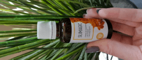
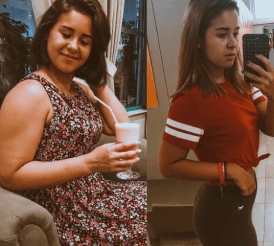

Osobní velký úspěch
Uh ... kde začít ...
Začněme, především děkuji za podporu,pochvaly a laskavá slova)) Opravdu pěkné... (samozřejmě jsem si vysloužila chválu) 😂
A ti, kteří se ke mně právě připojili, jmenuji se Maria a tohle je můj blog o tom, jak jsem zhubla.
Začněme) Celý proces hubnutí) Celý rok!
Od 120 kg do 75 kg to rozhodně není limit) Plánuji dalších mínus 15 kg)
Kdo se zajímal - růst 177, 33 let, telefonní číslo +420775 .. (dělám srandu)

Začátek příběhu: jsem byla velmi vysoká a moje matka mě zavedla do basketbalové sekce, všechno pro mě vyšlo a dokonce jsem myslela na kariéru, ale došlo k tragédii a můj oblíbený trenér zemřel. Šokovalo mě to a velmi mě rozrušilo, už jsem nechtěla hrát a vidět míč. A začala jsem hodně jíst, extrémně rychle jsem přibrala .
Nevrátila jsem se do basketbalu. Ve škole jsem neměla přátele, a byl jsem neustále škádlen kvůli růstuа, byla jsem vyšší než všechny dívky, kluci se mnou ani nemluvili… Je mi 13 let a moje váha je již 80 kg,ale v tu chvíli mě to nevadilo. Chodila jsem do školy a když se vrátila domů jen jedla, jedla.. Rodiče se mi pokusili pomoci, ale nic.
Uplynulo 5 let a já tady sedím jako kráva vážící 110 kg a pláču, že mě nikdo nemiluje) a nemám přátele a koníčky... Slyšela jsem za sebou smích.. "Tlustá kráva"... Zvykla jsem si na to…
Uplynulo dalších 10 let, vystudovala jsem vysokou školu, našla jsem dobrou práci… všechno se zdá být v pořádku ... ale měla jsem SEN... Chtěla jsem potkat muže, který mě bude milovat a já se pro něj stane lepší, krásnější..
Byl to můj sen ve 28 let ))))
Ale z nějakého důvodu jsem se s takovým nepotkala, proč??) Ale potkala jsem přítelkyni, která byla potřebná, tvrdá a pravdivá, ale zároveň připravená podporovat.
Velmi tvrdě mi řekla, že pokud chci manžela a děti musím jít a pracovat na sobě!!!! Protože:
- to je moje zdraví!
- tohle je můj život!
- Stydíš se běhat na stadionu? - A chceš být tlustá kráva?
- běž cvičit!
Víte, rozhodla jsem se vstát a jít!
 Na těchto fotografiích asi 120 kg..
Na těchto fotografiích asi 120 kg..
prvních 5 kg uklízela jsem dům, dělala podřepy, posilovála břicho (jak mohu) - všechna tato cvičení byla pro mě úspěch..
nejedla po 18:00
Ze své stravy jsem vyloučila chléb, rohlíky, těstoviny, cukr, sušenky)
Pak jsem začal běžet... Vím, že s takovou váhou je velmi škodlivé pro klouby, ale jsem se rozhodla to zkusit... Nebyl to ani běh!! Šla jsem rychle, periodický běžela asi 15 metrů, víc ne. Ale v tu chvíli to pro mě byla úroveň...postupně se snažila spustit trochu víc..
Po každém cvičení mi bolí nohy.. tělo také bolí.. stabilní dvakrát týdně prvních 10 kilogramů došlo k nervovému zhroucení bolesti svalů a pocitů hladu...
Plakala jsem neustále a říkala, že jsem unavená ze všeho.. v slzách šla na stadion .. běžela a plakala ..
Moje přítelkyně byla vždy v kontaktu v těchto chvílích a říkala do telefonu, že jsem už udělala hodně, že nemůžu zastavit.. to znamená, že poskytovala plnou morální podporu... a hysterie ustoupila hněvu, že jsem byla tak slabá a šla jsem trénovat.. s hněvem a vytrvalostí)
Po půl roce jsem ztratila 20 kg normálně jsem začala chodit do koupelny, která byla pro mě malá 😂 a uvědomila jsem si, že bolest svalů je uvolněna horkou vodou...
Pak jsem se cítila sebevědomější! A šla jsem do tělocvičny. Všechno bylo podle plánu, hmotnosti pomalu, ale odcházela, a jsem zvyklá jíst téměř nic...Ale najednou se váha zastavila… Měla jsem paniku. Samozřejmě, že jsem začal trénovat v tělocvičně ještě víc, vyzvedla novou stravu a hladovku…Ale nic nepomohlo. Jednoho strašného dne jsem se podívala na váhy a TO BYLO HROZNÉ +4 KG(((

Začala jsem mít depresi, šest měsíců takové práce, a pak všechno přestalo fungovat… Opět jsem všechno nechala, sedla jsem doma a jedla. Samozřejmě, že hmotnost se opět zvýšila, ale už mě to neobtěžovalo, nestarala jsem se o sebe a své sny. Moje kamarádka mi opět pomohla, za což jsem jí velmi vděčná!!!
Začala hledat alternativní způsoby, jak zhubnout., to je ona, ne já!!! Bylo mi to jedno ... Ona sledovala programy, četla články, knihy a obecně všechno, co mohla najít. A přinesla pořád mi již vypracovaný materiál, ale všechno jsem odmítla...A o měsíc později na mě běžela s vykřičníkem: „Našla jsem, co potřebuješ!“ a ukázal mi článek z amerického časopisu, kde se hovoří o výrobku Slimagic . Byla jsem skeptická, protože jsem nevěřila, že byste takto mohli zhubnout, protože každý říká, že můžete zhubnout pouze pomocí sportu a diety. Pro bohaté a zoufalé je to operace ... ale přečetla jsem si článek, stručné je: Slimagic - jedinečný výrobek na hubnutí založený na propolisu. Umožňuje rychle zbavit tělesného tuku a získat štíhlou postavu, aniž byste se uchylovali vyčerpávajícímu tréninku.
Rozpustít se ve sklenici vody a pit se před snídaní. Musíte se opakovat večer. A za měsíc můžete ztratit do 15 kg. .
To je krásná pohádka, že?? Ale nebylo možné odmítnout, ne-li pro sebe, pak alespoň kvůli kamarádce, která se tak usilovně snažila pomoci. Nemám čeho litovat kromě váhy. )))
Začali jsme hledat tento lék v Řecku, ukázalo se, že Slimagic prošel všemi klinickými zkouškami, je patentovaný a je oficiální stránka, kde si můžete koupit za velmi konkurenční cenu. Dokážu si představit, kolik by to stálo v lékárně, vzhledem k tomu, že složení je zcela přirozené…Objednala jsem si celý kurz a od té chvíle začal můj NOVÝ ŽIVOT

Takže:
První den
Ráno jsem vypila 12 kapek se sklenicí vody, 20 minut před snídaní, snídaně jako obvykle. Večer jsem opakoval totéž.
Druhý den
Všechno je stejné jako v první den. Žádné změny.
Třetí den
Na třetí den jsem si všimla, že moje chuť k jídlu se mírně snížil., a energie se zvýšila třikrát.
Sedmý den
Jsem se zvážila a upadla - minus 4 kg. Jen proto, že jsem pila kapky.
Nebudu popisovat všechny dny, napíšu stručně
Desátý den v pase byla - 5 cm Po dobu 21 dnů ztratil jsem 10 kg! WOW!! Tento výsledek jsem dosáhla téměř půl roku na hladovkách a tréninku.Obecně jsem za první měsíc se Slimagic ztratila 12 kg!!! Možná tomu nevěříte, ale ve skutečnosti je!!
Objednala jsem si více a použivala jsem další 3 měsíce. A po třech měsících jsem zhubla 40 kg Podařilo se mi zhubnout až na 80 kg, zbývá 15 kg)))
A řeknu vám tajemství: „Potkala jsem svého prince!“ “

Jsme na fotografii vlevo:)


Komentáře
Maria, hodně jsi se změnila! Děkuji za takový příběh vám a vaše kamaradce!! Dali jsi naději, že všechno je možné! Rozhodně objednám Slimagic
OdpovědětDěkuji mnohokrát! Určitě jí to řeknu!
OdpovědětSeděla jsem s kamaradkou na broskvové dietě a a shodila jsem jen 4 kg, pak se hmotnost nesnížila celý týden, pak jsem si objednala Slimagic, přivezl ho kurýrem do 5 dnů. Pila jsem 7 dní a ztratila jsem 4 kg. Doufám, že na konci kurzu nebudu přibývat na váze!
OdpovědětNe, nebojte se, tento produkt zaručuje výsledek bez jojo efektu!
OdpovědětJe mi skoro 42 let a po hubnutí jsem začal vypadat na 35 let. To vše díky dobré kůži - to je jako bonus tohoto produktu.
Maria, nevěřím ti, není možné zhubnout v tak krátké době. Lžete lidem!!! Koupila jsem si tento výrobek a žádný účinek!
OdpovědětKde jsi to koupila, myslím že to není na oficiálních stránkách a právě si koupila padělku?
OdpovědětNe, byla jsem na oficiálních stránkách, viděla jsem reklamu a slevu a koupila jsem ji.
OdpovědětObjednejte si na oficiálním webu a podívejte se, jaký bude výsledek.
OdpovědětMaria, poslouchala jsem tvou radu a objednala jsem se v oficiálním obchodě, pila jsem týden a - 3 kg. Děkuji!
OdpovědětMůj přítel mě opustil, ale pořád ho miluji. Neustále mi krmil pizzu a nezdravé jídlo a teď jsem velmi tlustá. Jeho přátelé mě nikdy neměli rádi, vždycky mě nazývali tlustou krávou. Šla jsem do tělocvičny, ale hmotnost se nepohybovala, uviděla jsem reklamu a objednala tento produkt . Obecně o měsíc později mě můj bývalý přítel viděl a řekl, že jsem velmi hubená teď jsme zase spolu
ve srovnání s jakýmikoli existujícími lékárenskými léky, tenhle pracoval na mě, ted' je -3 kg během týdne. Možná to není nejlepší výsledek, ale nemusím zhubnout hodně.
OdpovědětNemusela jsem ani měnit svůj obvyklý způsob života! Obvykle, při hubnutí musíte dodržovat dietu, a kromě toho chodit do posilovny, a zde, bez dalšího úsilí, díky aktivním přírodním složkám, po 3 týdnech obdržela sexy postavu a velkou část vitamínů pro tělo.
 OdpovědětTaké jsem se rozhodla vyzkoušet . Můj výsledek: za měsíc jsem ztratila 10 kg a snížila se v pasu o 7 cm. Takže lidé, pokud potřebujete rychle zhubnout, tak Slimagic to je to, co potřebujete
 OdpovědětRadím každému, aby si objednali! Skvělý spalovač tuků . Pomáhá nejen zhubnout, ale také poskytuje tělu vitamíny a minerály během procesu hubnutí. A to znamená posílení vlasů a nehtů, zvyšuje imunitu. Opravdu se mi to líbilo. Díky tomuto komplexu jsem za dva týdny ztratila 9 kg a silnou dávku energie.
OdpovědětA nevíte, jestli má tento produkt certifikáty kvality nebo prošel lidskými testy?? A je skutečně možné, že se to stane za 2-3 týdny? A pro stav nervového systému má lék špatný účinek? Mám tolik otázek, omlouvám se, ale pro mě je to velmi důležité.
Odpověděturčitě jsou certifikáty. O jiných otázkách - říkám si, že to nemá žádný vliv na nervový systém špatně, naopak, jsem si všimla zlepšení nálady a energie. Teď mám krásnou postavu a usmívám se.. Doporučuji vám jít na oficiální web objednat, počkat, až zavolá manažer a zeptat se ho na všechny otázky.
OdpovědětJako odborník na výživu potvrzuji, že komplex funguje efektivně, obsahuje pouze přírodní složky, neobsahuje škodlivé látky, které často způsobují alergie a žaludeční potíže. Kromě toho Slimagic je nejoblíbenější spalovač tuků roku 2019, upravuje trávicí systém a metabolické funkce tak, aby správně fungovaly. Extrakt z cedrového oleje a čajové oleje v komplexu normalizují centrální nervový systém, zlepšuje strukturu vlasů a pokožky, vytváří čistou tvář (eliminuje akné), eliminuje zásoby podkožního tuku. Je důležité používat spalovač tuků správně a nesnižovat nebo překračovat dávku, pak za chvilku Vy ztratíte 10-15 kg za měsíc. .
OdpovědětJak se provádí platba?? A může dojít k alergické reakci? Pro mě je to velmi důležité. Také jsem četl, že tento výrobek pomáhá k celkovému zlepšení těla. To je pravda?
OdpovědětPromiň spalovač tuků opravdu funguje.. Nejdražší výrobky to však nejsou schopny. Berte pouze v souladu s návodem k použití, účinek bude za týden. Platte kurýrem v hotovosti
Odpovědět